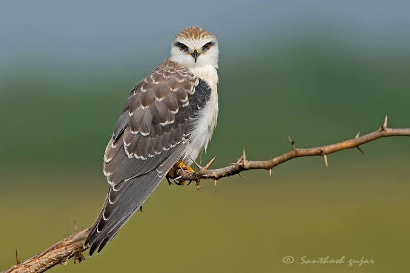

Black Winged Kite
Birds
The black-winged kite, also known as the black-shouldered kite, is a small diurnal bird of prey in the family Accipitridae best known for its habit of hovering over open grasslands in the manner of the much smaller kestrels.
Family: Accipitridae
Scientific name: Elanus caeruleus
Mass: 260 g
Conservation status: Least Concern (Population stable)
Phylum: Chordata
Higher classification: Elanus
The black-winged kite (Elanus caeruleus), also known as the black-shouldered kite (not to be confused with the closely related Australian species with the same name), is a small diurnal bird of prey in the family Accipitridae best known for its habit of hovering over open grasslands in the manner of the much smaller kestrels.
This Palearctic and Afrotropical species was sometimes combined with the Australian black-shouldered kite (Elanus axillaris) and the white-tailed kite (Elanus leucurus) of North and South America which together form a superspecies.
This kite is distinctive, with long wings; white, grey and black plumage; and owl-like forward-facing eyes with red irises. The owl-like behaviour is even more pronounced in the letter-winged kite (Elanus scriptus), a nocturnal relative in Australia.
Although mainly seen on plains, they are sometimes seen on grassy slopes of hills in the higher elevation regions of Asia. They are not migratory, but show nomadism in response to weather and food availability.
They are well adapted to utilize periodic upsurges in rodent populations and can raise multiple broods in a single year unlike most birds of prey.
Populations in southern Europe have grown in response to human activities, particularly agriculture and livestock rearing.
Biology of Black Winged Kite
Distribution and habitat
The black-winged kite is a species primarily of open land and semi-deserts in sub-Saharan Africa and tropical Asia, but it has a foothold within Europe in Spain and Portugal.
The species range appears to be expanding in southern Europe and possibly in West Asia. The first records of breeding in Europe were in the 1860s and since then they have become more widespread and populations are on the rise.
It is thought that land-use changes, particularly agriculture and pastureland have helped the species.
Several geographic populations have been named as subspecies and these include the nominate subspecies which occurs in Spain, Africa and Arabia.
The subspecies vociferus is found east of this range across South Asia and into Southeast Asia. Along Sumatra, Java, Borneo and the Philippines subspecies hypoleucus (sometimes considered a full species) includes the population wahgiensis described from New Guinea.
Subspecies sumatranus is not always recognized. The white-tailed kite and the black-shouldered kite were formerly included with this species but have since been treated as separate species.
Although found mainly on the plains they have been seen at higher altitudes in Sikkim (3,650 m (11,980 ft)), the Nilgiris (Doddabetta, 2,670 m (8,760 ft))[20] and Nagaland (2,020 m (6,630 ft)).
Behaviour and ecology
The black-winged kite breeds at different times of the year across its range. Although nesting has been noted throughout the year in India, they appear not to breed in April and May.
Males establish territories and defend them from competition. Females move into the territories of males. Studies in Africa found that males were more numerous than females.
Courtship is noisy and involves chases and once the pair is formed they copulate frequently. The nest is a loose platform of twigs in which 3 or 4 eggs are laid. The female spends more effort in the construction of the nest than the male.
The eggs are pale creamy with spots of deep red. Both parents incubate but when the chicks hatch, the male spends more time on foraging for food.
Females initially feed the young, sometimes hunting close to the nest but will also receive food from the male. After fledging the young birds continue to be dependent for food on the male parent for about 80 days, initially transferring food at perch and later in the air. Young birds have reddish brown feathers on the upperparts and on the breast.